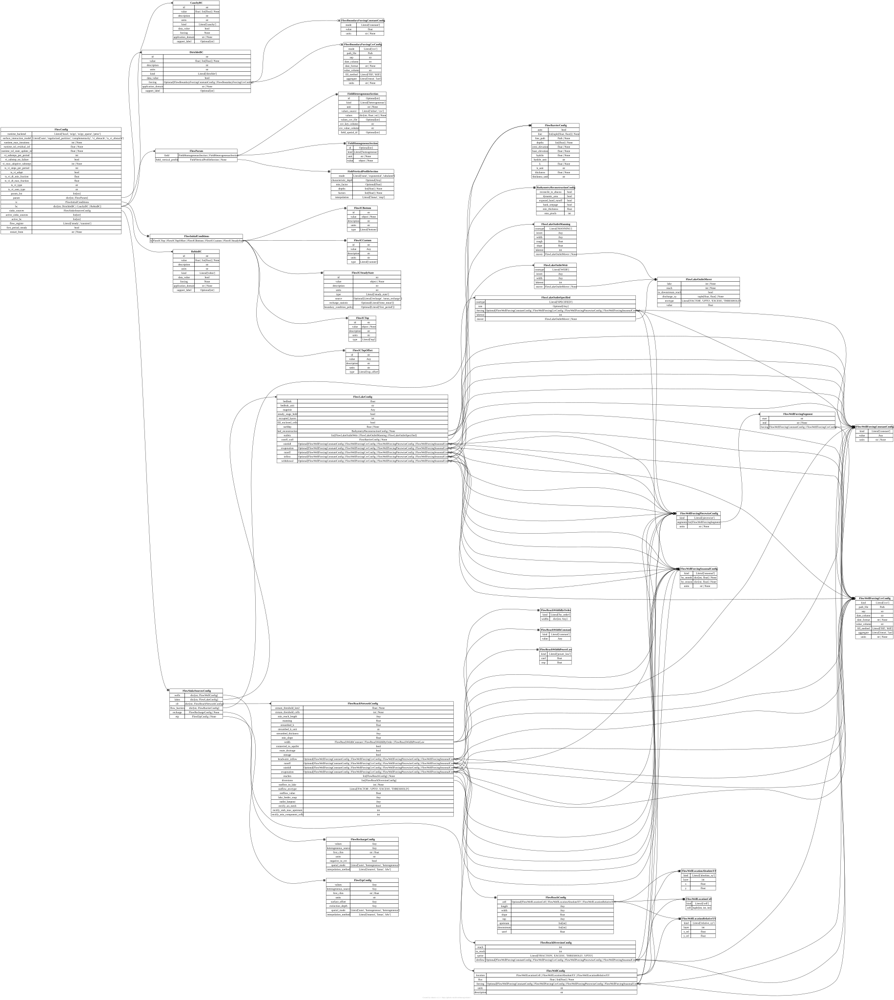

[flow] FlowConfig#
TOML section: [flow]
Pydantic model: FlowConfig defined in hydromodpy.physics.flow.flow_config.
Flow-process configuration.
Parameters are declared in param_list (ordered list of ids), and
parameter payloads are stored in param. The 13 flat
runtime_*/vi_*/ts_vi_* Boussinesq knobs are declared on
FlowRuntimeFields and grouped together by the
runtime property as a FlowRuntimeConfig view.
Fields#
runtime_backend
Literal[‘local’, ‘scipy’, ‘scipy_sparse’, ‘petsc’] default = “local” dev experimental source
Optional nonlinear runtime backend hint used by the Boussinesq solver implementation. Other flow solvers may ignore this field.
Examples
"local""scipy_sparse"
surface_interaction_model
Literal[‘auto’, ‘regularized_partition’, ‘complementarity’, ‘vi_obstacle’, ‘ts_vi_obstacle’] default = “auto” dev experimental source
Optional Boussinesq surface-interaction closure selector. ‘regularized_partition’ uses the Marcais-style q_ex = G_r(theta) R(balance) law; ‘complementarity’ uses the mixed PETSc q_ex-perp-(z_top-h) formulation; ‘vi_obstacle’ uses the experimental PETSc head-only VI obstacle formulation; ‘auto’ keeps the historical backend-dependent default.
Examples
"auto""regularized_partition"
runtime_max_iterations
int | None default = None dev source
Optional override for the nonlinear iteration budget used by the Boussinesq runtime backend.
runtime_tol_residual_inf
float | None default = None dev source
Optional override for the infinity-norm residual tolerance used by the Boussinesq runtime backend.
runtime_tol_state_update_inf
float | None default = None dev source
Optional override for the infinity-norm state-update tolerance used by Boussinesq backends that track it.
vi_substeps_per_period
int default = 1 dev source
Fixed number of Backward-Euler substeps per stress period for the experimental PETSc VI obstacle runtime. Rate-based forcing values are kept unchanged on each substep.
vi_substep_on_failure
bool default = False dev source
When true, retry a failed PETSc VI obstacle stress period with increasing substep counts.
vi_max_adaptive_substeps
int | None default = None dev source
Maximum number of PETSc VI obstacle substeps allowed for adaptive failure retries.
ts_vi_steps_per_period
int default = 4 dev source
Fixed PETSc TS Backward-Euler steps per stress period for the experimental TS VI obstacle runtime.
ts_vi_adapt
bool default = False dev source
Enable experimental PETSc TS adaptivity for the TS VI obstacle runtime.
ts_vi_dt_min_fraction
float default = 0.015625 dev source
Minimum TS VI time-step as a fraction of the stress-period length.
ts_vi_dt_max_fraction
float default = 0.25 dev source
Maximum TS VI time-step as a fraction of the stress-period length.
ts_vi_type
str default = “beuler” dev source
PETSc TS type for the experimental TS VI obstacle runtime.
ts_vi_snes_type
str default = “vinewtonrsls” dev source
PETSc SNES type for the experimental TS VI obstacle runtime.
param_list
list[str] factory user source
Ordered list of flow-parameter identifiers used to build runtime parameters (for example [‘K’, ‘Ss’, ‘Sy’]).
Example: ["K", "Sy", "Ss"]
param
in TOML:
[flow.param.<id>]
dict[str, FlowParam] factory user source
Mapping of flow-parameter identifiers to native FieldParamConfig payloads.
ic
in TOML:
[flow.ic]
FlowInitialConditions factory user source
Validated flow initial-condition structure parsed from [flow.ic]. Stored as FlowInitialConditions(h=FlowInitialCondition).
bc
in TOML:
[flow.bc.<id>]
kind = “dirichlet” | “cauchy” | “robin” factory user source
Mapping of flow boundary-condition payloads parsed from
[flow.bc].Supported TOML sections
[flow.bc.dirichlet.<id>]where<id>is one ofocean,stream,north_side,south_side,east_side,west_side
[flow.bc.cauchy.drainage]
[flow.bc.robin.drainage]
[flow.bc.<custom_id>]for generic payloadsCommon keys
value(required): numeric or'<value> <unit>'
application_domain: optional for dirichlet when<id>implies it (e.g.west_side->'west side'); required forcauchyandrobindrainageAllowed application_domain values:
top,north side,south side,east side,west side.Default units:
mfor dirichlet,m2/sfor cauchy/robin.Cauchy vs Robin: both map to the same MODFLOW
DRNpackage; the distinction only matters for the Boussinesq solver, which uses two different surface-interaction closures (cauchyfor the linear formulationq = C(h - h_ref),robinfor the regularized partition / complementarity variants selected byflow.surface_interaction_model).Pick a tab below: setting
kindselects the matching schema.
TOML: [flow.bc.dirichlet.<id>] – model DirichletBC (set kind = "dirichlet").
value
float | list[float] | None default = None user source
Boundary-condition value, scalar or one value per stress period.
data_value
bool default = False dev source
If True, boundary-condition values are sourced from data.
forcing
in TOML:
[flow.bc.dirichlet.<id>.forcing]
mode = “constant” | “csv” default = None dev source
Optional runtime forcing declaration for lateral Dirichlet boundaries. Supported modes: ‘constant’ and ‘csv’. The launcher resolves this payload to boundary.value using [simulation.time].
Pick a tab below: setting
modeselects the matching schema.
TOML: [flow.bc.dirichlet.<id>.forcing.constant] – model FlowBoundaryForcingConstantConfig (set mode = "constant").
units
str | None default = None dev source
Source units of forcing values before runtime conversion.
TOML: [flow.bc.dirichlet.<id>.forcing.csv] – model FlowBoundaryForcingCsvConfig (set mode = "csv").
path_file
Path required dev source
CSV file path containing time-series boundary head values when mode=’csv’.
date_format
str | None default = None dev source
Optional datetime format passed to pandas.to_datetime.
fill_method
Literal[‘ffill’, ‘bfill’] default = “ffill” dev source
Gap-filling policy used when a stress period has no direct sample.
units
str | None default = None dev source
Source units of forcing values before runtime conversion.
application_domain
str | None default = None user source
Boundary-application domain. Supported values are: top, north side, south side, east side, west side.
support_label
Optional[str] default = None user source
Optional explicit runtime support label used by unstructured backends to select one target support independently from the canonical boundary id.
TOML: [flow.bc.cauchy.<id>] – model CauchyBC (set kind = "cauchy").
value
float | list[float] | None default = None user source
Boundary-condition value, scalar or one value per stress period.
data_value
bool default = False dev source
If True, boundary-condition values are sourced from data.
application_domain
str | None default = None user source
Boundary-application domain. Supported values are: top, north side, south side, east side, west side.
support_label
Optional[str] default = None user source
Optional explicit runtime support label used by unstructured backends to select one target support independently from the canonical boundary id.
TOML: [flow.bc.robin.<id>] – model RobinBC (set kind = "robin").
value
float | list[float] | None default = None user source
Boundary-condition value, scalar or one value per stress period.
data_value
bool default = False dev source
If True, boundary-condition values are sourced from data.
application_domain
str | None default = None user source
Boundary-application domain. Supported values are: top, north side, south side, east side, west side.
support_label
Optional[str] default = None user source
Optional explicit runtime support label used by unstructured backends to select one target support independently from the canonical boundary id.
sinks_sources
in TOML:
[flow.sinks_sources]
FlowSinksSourcesConfig factory user source
Typed sinks/sources payload (for example pumping wells).
active_sinks_sources
list[str] factory user source
Explicitly activated sink/source names for this flow run. Allowed values: ‘recharge’, ‘wells’, ‘etp’. Boussinesq currently rejects ‘etp’ at solver-contract validation. An empty list means no sink/source package is assembled by the solver.
Examples
["recharge"]["recharge", "wells"]["etp"]
active_bc
list[str] factory user source
Explicitly activated boundary-condition ids for this flow run. Allowed values are the canonical ids declared in the flow boundary-condition registry: ‘ocean’, ‘stream’, ‘north_side’, ‘south_side’, ‘east_side’, ‘west_side’, ‘drainage’. An empty list means no boundary-condition package is assembled by the solver.
Examples
["ocean"]["west_side", "east_side", "drainage"]
flow_regime
Literal[‘steady’, ‘transient’] default = “transient” user source
Global flow simulation regime used by solvers consuming [flow] (steady or transient).
Examples
"steady""transient"
first_period_steady
bool default = True user source
For transient flow, mark the first solver stress period as steady-state. Ignored for steady flow, where all solver periods are steady.
Examples
truefalse
Starter TOML snippet#
Cases using this section#
Validation gallery cases that reference fields from this section:
Entity-relationship diagram#
{kind=link}

Click to zoom and pan. Press Esc or click outside to close.